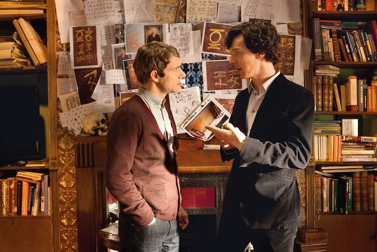

SHERLOCK HOLMES
Sherlock Holmes is a 2009 action mystery film directed by Guy Ritchie and starring Robert Downey Jr. as the legendary detective Sherlock Holmes and Jude Law as his loyal companion Dr. John Watson. The film reimagines the classic Arthur Conan Doyle character with a modern cinematic flair, combining sharp wit, intense physicality, and intricate deduction.
Sherlock Holmes is a gripping crime mystery that blends action, deduction, and historical atmosphere. The film reimagines the legendary detective with modern flair, making it one of the most stylish and intense adaptations of the classic character.
Set in Victorian London, the movie follows Holmes as he investigates a series of bizarre murders seemingly tied to an ancient secret society. With stunning fight choreography, atmospheric set design, and a dynamic chemistry between Downey Jr. and Law, the film revitalized the iconic detective for a new generation.

Unlike previous adaptations, this version portrays Sherlock Holmes as a highly observant yet physically formidable investigator. His deductive reasoning is shown in real-time through dramatic slow-motion sequences that reveal hidden clues and potential outcomes of his actions. This unique visual style became one of the most memorable aspects of the film.
The supporting cast includes Rachel McAdams as Irene Adler, Mark Strong as the villainous Lord Blackwood, and Eddie Marsan as Inspector Lestrade. Each performance adds depth and intrigue to the unfolding mystery. The sequel, Sherlock Holmes: A Game of Shadows, continued the adventures of the famous detective with equal intensity and style.
The film received critical acclaim for its fresh take on the classic character, visual storytelling, and strong performances. It won an Academy Award for Best Cinematography and remains one of the most popular modern interpretations of Sherlock Holmes. The success of the film also helped solidify Robert Downey Jr.'s comeback as a leading actor in Hollywood.
Main Cast

Benedict Cumberbatch
Sherlock Holmes

Martin Freeman
Dr. John Watson
Una Stubbs
Mrs. Hudson
Rupert Graves
DI Greg Lestrade
Andrew Scott
Jim Moriarty
Mark Gatiss
Mycroft Holmes